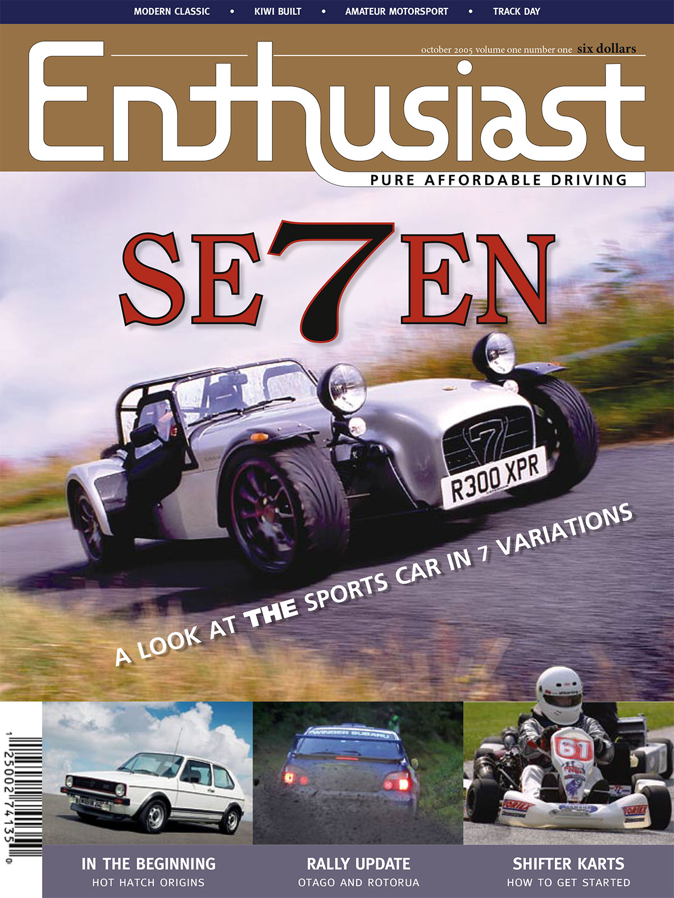
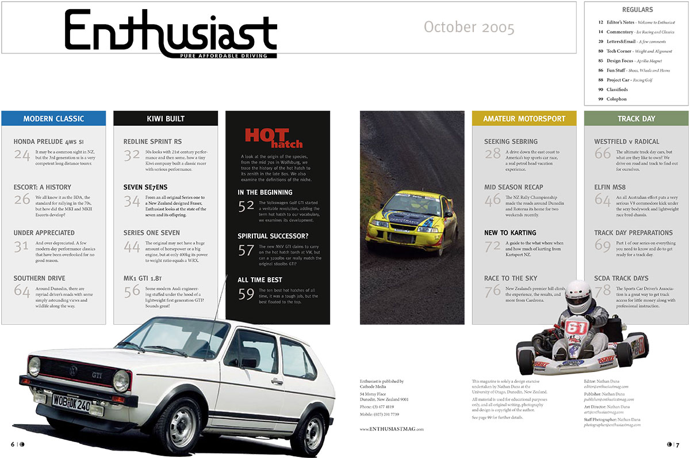
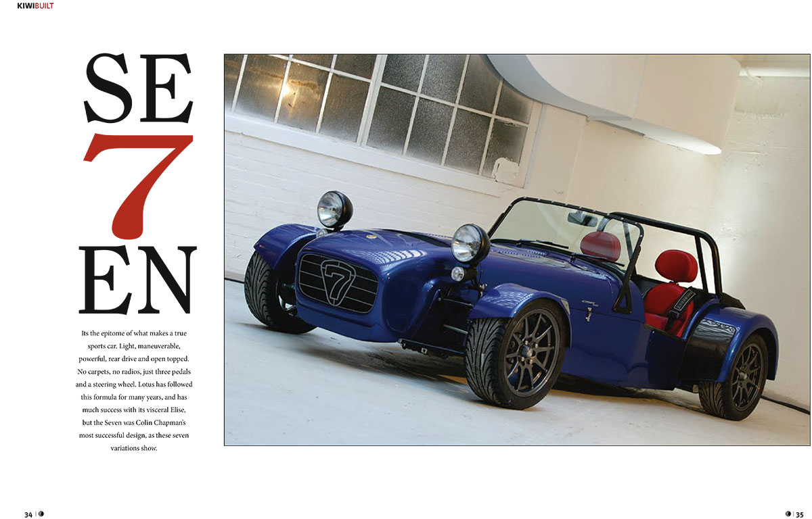
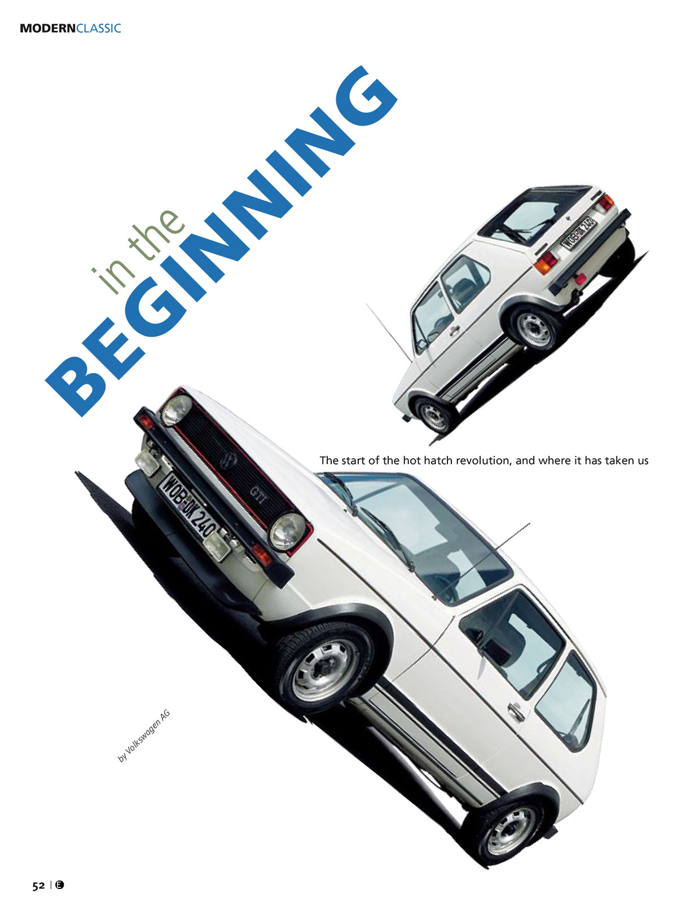
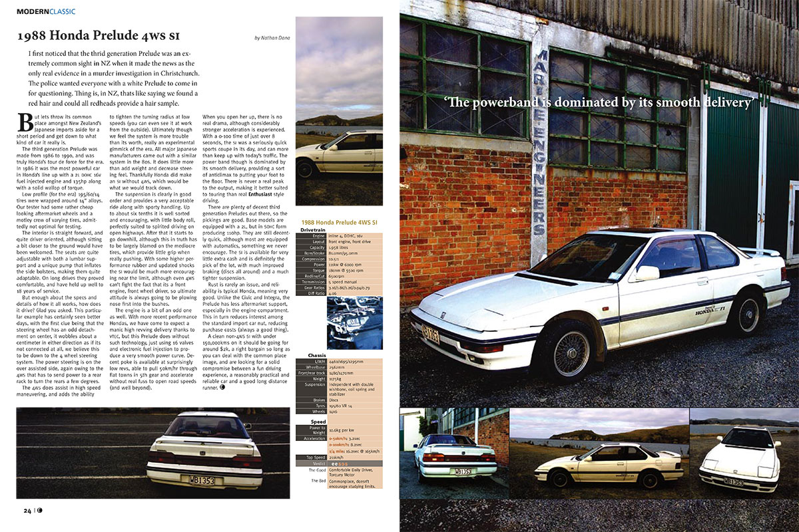

Enthusiast Magazine
For my senior project at the University of Otago, I knew I wanted to combine my passions for design and classic cars. I came up with the idea to design a few pages of an automotive magazine. Hundreds of hours of intense work later, I emerged with a 100-page issue of "Enthusiast". I went well above and beyond as I got sucked into the project, which was originally just going to be a few example pages of layout and design. I ended up soliciting articles, writing my own, integrating my photography, and even figuring out where ads should go in the layout. The result was a print run of two (hand cut!), but a very realistic ending.
Lessons Learned
When my passion is ignited in my work, 400 hours fly by without a blink. Enthusiast was a major undertaking, and I always hoped it could become a real product, but the realities of the magazine market and stronger design than pure business skills meant it was not meant to be. As a senior project, it earned a full 100% grade (something very rarely given in New Zealand tertiary institutions).
